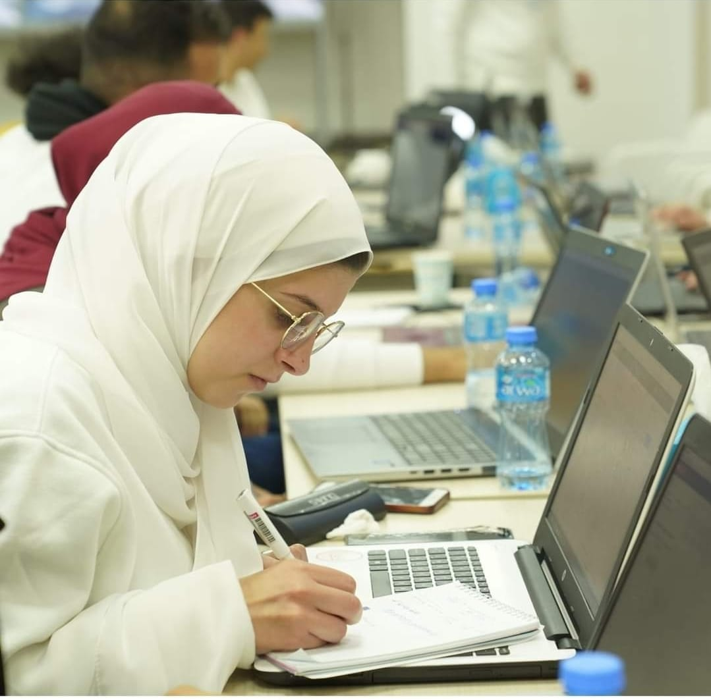

hey Tala Hithnawi, 24 years old, Palestinian from Jenin,a senior computer engineering student at AnNajah National University . My practical qualifications varies in different fields from leading a feminine team which is “Youths towards change” to participating in so many activities that belong to many associations in my university, activities from astronomy camping with SAPA to programming nights with Paltel & IEEE or GDG. My English is good to very good depending on the required skill. I want to mention several Qualities I see in me, that I can really work under pressure & difficult situations,second, I can easily work with a group, also I make social relations quickly, going to my field I know how to code in many different computer languages such as pithon,Java..also I’m a good user of Microsoft applications “Word, Excel, PowerPoint” . Thank you for listening & for your precious time
is a city in the State of Palestine, in the Israeli-occupied West Bank. The city serves as the administrative center of the Jenin Governorate of Palestine and is a major center for the surrounding towns.Jenin came under Israeli occupation in 1967, and was put under the administration of the Palestinian National Authority as Area A of the West Bank in 1993.